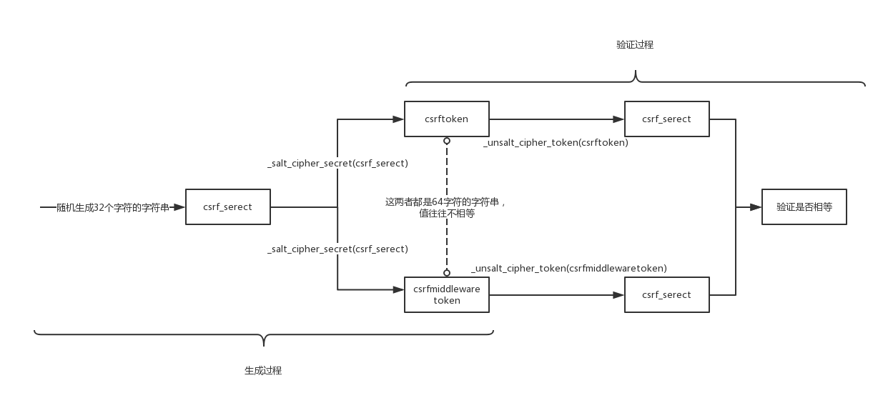
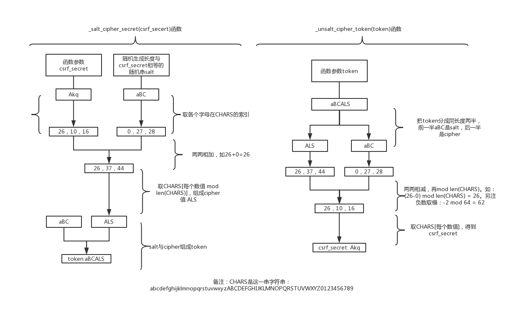

Django CSRF防御具体流程
Django对CSRF的防御主要由django.middleware.csrf.CsrfViewMiddleware中间件来实现。通过在settings.py的MIDDLEWARE_CLASSES（新版的Django该项改为MIDDLEWARE）加上django.middleware.csrf.CsrfViewMiddleware来启用这个中间件。通过Django源码的django/middleware/csrf.py文件，调试程序来分析了Django CSRF防御流程。这篇文章记下我的理解。
版本说明：
Django Version：1.9.5
Python Version：2.7
Django CSRF防御具体流程
首先要清楚Django是怎么验证一个请求不是CSRF：Django会从请求头cookie取csrftoken这一项的值，再从POST表单里取csrfmiddlewaretoken这一项（或从请求头X-CSRFToken取）的值，通过比对两者是否一致来判断这个请求是不是非法，非法就返回403状态码。这里的“是否一致”，并不是判断两者的值是否相等，而是判断_unsalt_cipher_token(csrfmiddlewaretoken)和_unsalt_cipher_token(csrftoken)是否相等，具体留在后面说。
而生成csrftoken和csrfmiddlewaretoken的代码在get_token(request)函数
1 | |
这个函数会在渲染模板的时候调用，具体来说是由csrf context processor调用。
如果request.META["CRSF_COOKIE"]不存在，就调用_get_new_csrf_string()函数来生成一串随机字符（32个字符，大小写字母和数字），赋给csrf_secret，再调用_salt_cipher_secret(scrf_secret)生成64个字符的字符串赋给request.META["CSRF_COOKIE"]，而这个request.META["CSRF_COOKIE"]之后用来设置COOKIE 的csrftoken。
最后的返回值_salt_cipher_secret(csrf_secret)就渲染到POST表单的csrfmiddlewaretoken。值得一提的是_salt_cipher_secret(csrf_secret)每次的返回值都不一样，而csrf_secret == _unsalt_cipher_token(_salt_cipher_secret(csrf_secret))。
总的来说，涉及到三个值，csrftoken、csrfmiddlewaretoken和csrf_secret，还有两个函数，_unsalt_cipher_token(token)和_salt_cipher_secret(token)。用图来说明下这两个过程：
- 生成
csrftoken和csrfmiddlewaretoken。 - 验证
csrftoken和csrfmiddlewaretoken是否一致。

那_unsalt_cipher_token和_salt_cipher_secret这两个函数具体怎么实现呢？怎么做到_salt_cipher_secret(csrf_secret)每次返回的token值不同，调用_unsalt_cipher_token(token)就返回原来的csrf_secret？
用图来表示（简化下，把csrf_secret长度改为3）

上面的过程主要涉及到的数值运算就这两条式子（下面的符号都表示一个整数）:
1 | |
其它
django/middleware/csrf.py文件里有个函数：rotate_token(request)，这个函数用来改变csrftoken这个COOKIE。 在用户登录后（是指django.contrib.auth这个组件的登录）调用，主要从安全考虑，避免这个COOKIE跟登录前的一样。 如果自己实现的登录逻辑，可以调用这个函数提高点安全性。- 一般
csrftoken这个COOKIE是不会变的，除了第一点说的登录，和不存在时重新生成一个。有时候会出现登录后csrftoken失效的情况。官网一个FAQ - 为什么Django要把
csrftoken和csrfmiddlewaretoken设置成不相等，直接生成的时候让它们相等，验证的时候判断是否相等不就好了？个人觉得这样做有个好处，有时候csrftoken这个COOKIE前端不需要获取，可以设置成HTTP ONLY，提高点安全性。 大家怎么看？ - 从上面分析的算法来看，
csrftoken跟csrfmiddlewaretoken相同也可以通过CSRF验证。所以在AJAX请求中，直接取csrftoken值加到请求中就好了。
本博客所有文章除特别声明外，均采用 CC BY-SA 4.0 协议 ，转载请注明出处！